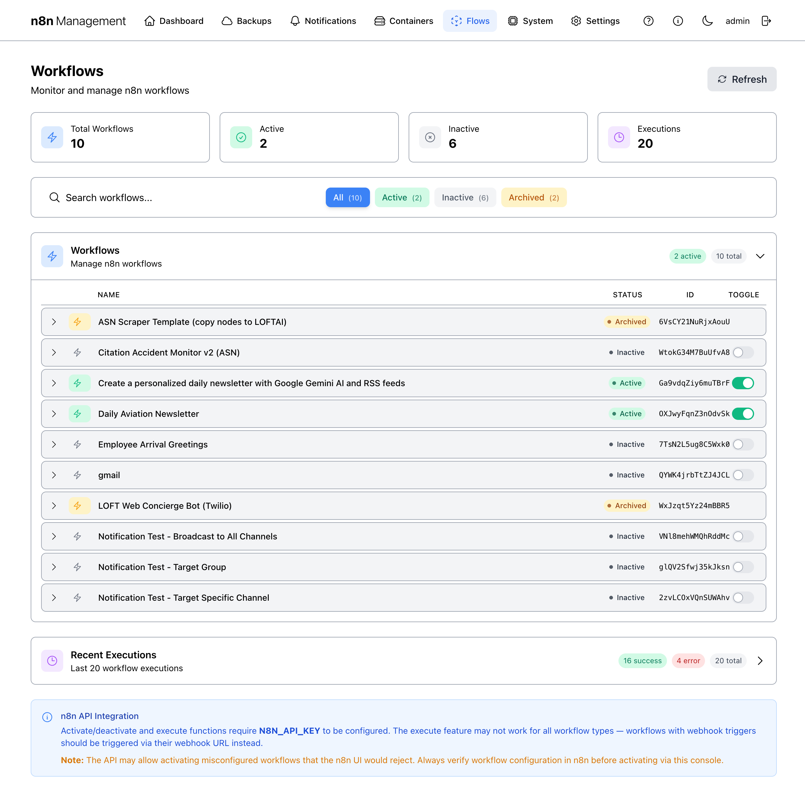
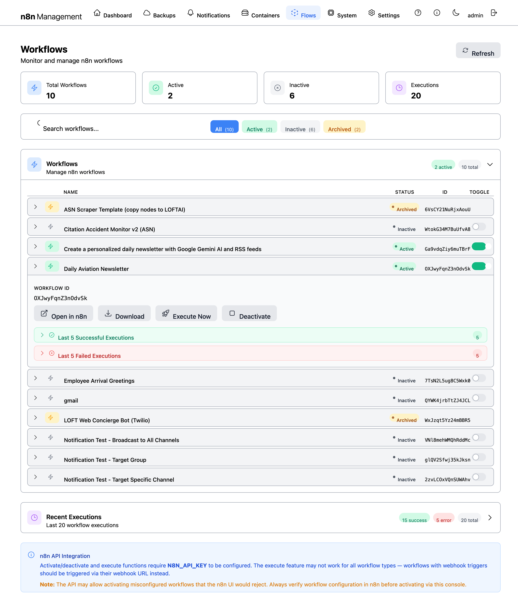
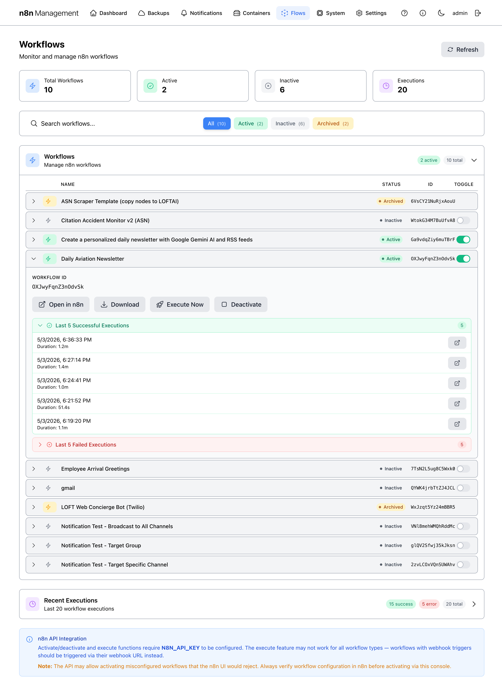
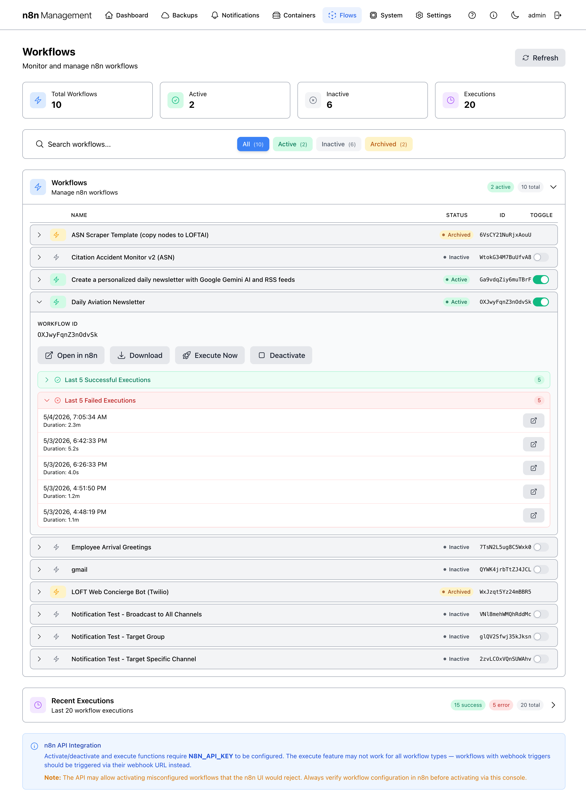
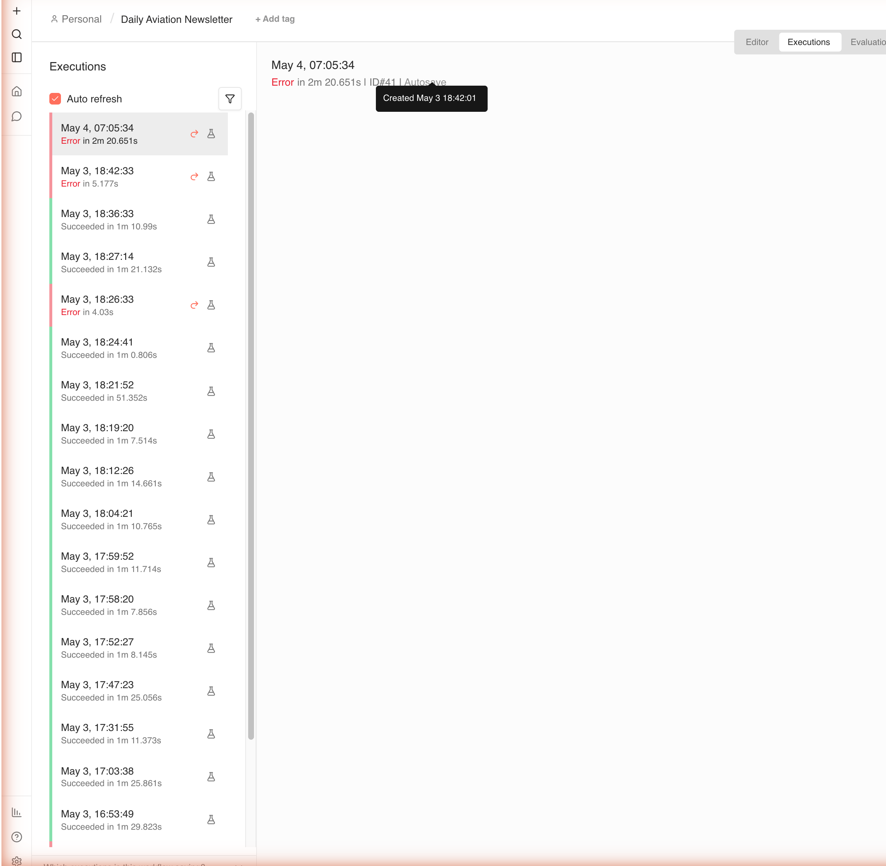

Flows¶
The Flows page lets you see, filter, and toggle every n8n workflow without leaving the management console. It's a thin operational layer over n8n's API: read-only for inspection, plus an activate-toggle and an execute-now action for the workflows that support them.
Overview¶
The page has four bands top to bottom: a header with title and Refresh button, a row of four summary cards, a search/filter bar, and the main listing — a collapsible Workflows panel and a collapsible Recent Executions panel. The screenshot below shows everything; subsequent sections describe each area.

Figure 1: Flows page — full overview.Summary cards¶
Four cards across the top show workflow counts at a glance:
| Card | Counts |
|---|---|
| Total Workflows | Every workflow in n8n that the management console can see. |
| Active | Workflows currently in the active state — eligible to fire on triggers (cron, webhook, etc.). |
| Inactive | Workflows that exist but are toggled off. |
| Executions | Cumulative execution count across all workflows. Compare against the Recent Executions panel for the most recent activity. |
Search & filters¶
The search row offers a free-text search box and four state filter pills.
Filter pills¶
| Pill | Shows |
|---|---|
| All | Every workflow regardless of state (default). |
| Active | Only currently-active workflows. |
| Inactive | Only currently-inactive workflows. |
| Archived | Workflows that n8n has archived (soft-deleted). Available if your n8n version supports archiving. |
Each pill shows a live count in parentheses. The numbers always sum to the Total Workflows card above.
Tip
Search and filters compose. Type a name fragment in the search box and click Active to find only the active workflows whose name matches.
Workflow list¶
The Workflows panel renders matched workflows as rows with four columns:
| Column | Meaning |
|---|---|
| Name | The workflow's display name from n8n. Click anywhere on the row to expand for metadata. |
| Status | Pill showing Active (green) or Inactive (gray). |
| ID | n8n's internal workflow ID. Useful for API calls and webhook URL construction. |
| Toggle | Activate/deactivate switch — see the next section. |
Expanded workflow detail¶
Clicking anywhere on a workflow row expands it in place to reveal the workflow's metadata and quick-action buttons. The expanded view shows the workflow's full ID, four action buttons, and two collapsible execution-history panels — one for the most recent successful runs and one for the most recent failed runs. Clicking the row again collapses it.

Figure 2: A workflow row expanded in place — metadata, four action buttons, and two collapsed execution-history panels.Action buttons¶
| Button | What it does |
|---|---|
| Open in n8n | Opens the workflow in n8n's editor in a new tab. Use this for any deep-dive editing — the management console intentionally doesn't reproduce n8n's editor. |
| Download | Downloads the workflow's JSON definition. Useful for backup, version control, or moving between n8n instances. |
| Execute Now | Runs the workflow on demand via n8n's API. Disabled / no-op for webhook-triggered workflows (see n8n API integration below). |
| Activate / Deactivate | Same effect as the Toggle switch on the right side of the row, mirrored here for convenience. |
Last 5 successful executions¶
Click the green Last 5 Successful Executions header inside an expanded row to reveal the most recent successful runs for that workflow. Each entry shows the start timestamp, duration, and an "open in n8n" button to drill into the execution log. The badge to the right of the header counts how many successful runs are recorded.

Figure 3: Last 5 Successful Executions expanded — five recent successful runs of Daily Aviation Newsletter with timestamps, durations, and open-in-n8n actions.The execution times come straight from n8n; the management console only renders them. To see node-by-node output for a successful run, click the open-in-n8n action on the right.
Last 5 failed executions¶
The red Last 5 Failed Executions header opens an analogous panel of the most recent failures. The two panels are mutually exclusive — opening the failed panel automatically collapses the successful panel and vice versa, so you're always looking at one history at a time. The red badge counts current failures; if it's zero the panel is empty when expanded.

Figure 4: Last 5 Failed Executions expanded — four recent failed runs of Daily Aviation Newsletter, sorted newest first.Tip
A short duration on a failed run usually means the workflow errored early (auth, validation, missing credential). A long duration on a failure usually means a downstream API timed out. Compare durations across failures before opening the execution in n8n — the pattern often points at the cause.
View execution in n8n¶
To the right of every execution row — both in the Last 5 Successful and Last 5 Failed panels — is a small View in n8n icon button. Clicking it opens that exact execution directly in n8n's editor in a new tab, so you can inspect node-by-node output, see the error stacktrace, retry from a checkpoint, or run the workflow manually with the same input. It's a one-click jump from the management console's triage view to n8n's full debugger.

Figure 5: After clicking the View in n8n icon — n8n's Executions view opens directly to the selected failed run. Use Debug in editor (top right) to drop into the node graph at the failure point.Tip
The icon is the small box-with-arrow icon to the right of the timestamp and duration. The selected execution is highlighted on the left sidebar; the right panel shows the run header. Click Debug in editor in the top-right to load the node graph with the failed node flagged, where you can inspect each node's input, output, and error message.
Toggling active/inactive¶
The right-side Toggle switch flips the workflow between active and inactive without leaving the management console. Activation requires N8N_API_KEY to be set — see n8n API integration below.
Danger
Activating a workflow with a cron / scheduled trigger means it will fire at its scheduled time without further interaction. Make sure you've reviewed the workflow's nodes in n8n before flipping the toggle. Activating a workflow with a misconfigured destination (wrong API key, wrong webhook target) can produce unexpected side effects in downstream systems.
Warning
The management console's API integration may allow activating workflows that the n8n UI itself would reject as misconfigured. Always verify configuration in n8n first.
Recent Executions¶
Below the workflows panel is the Recent Executions card. It shows a count summary (e.g., 0 success, 0 total) and a chevron to expand a per-execution list of the last 20 runs.
When expanded, each row in Recent Executions shows the workflow name, start time, duration, status (success / error / running), and any execution-level error message. Use this to spot recent failures without leaving the management console.
Tip
For deeper inspection of a specific execution — node-by-node output, retry, manual run from a checkpoint — open the workflow in n8n itself. The management console's Recent Executions is a triage view, not a full debugger.
n8n API integration¶
The bottom of the page hosts an information panel describing the prerequisite for activate / execute features: a configured N8N_API_KEY in the management console's environment.
What requires the API key¶
- Activating / deactivating a workflow via the Toggle switch.
- Executing a workflow on demand (the in-row Execute action, where supported).
What still works without it¶
- Listing workflows.
- Viewing workflow IDs and current status.
- Reading recent execution history.
Webhook-triggered workflows¶
Workflows whose first node is a Webhook trigger cannot be invoked via n8n's execute API — they must be triggered by hitting their webhook URL directly. The Execute action will be either disabled or non-functional for those. To trigger them, find the URL in n8n's webhook node configuration.
Note
The N8N_API_KEY value lives in .env alongside the other deployment secrets. To rotate it, regenerate in n8n's Settings → API, update .env, and recreate the management container (see Containers → Per-container actions).